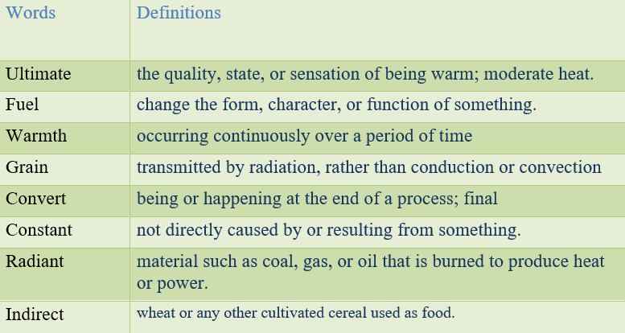

Energy from the sun
The sun has produced energy for billions of years and is the ultimate source for all of the energy sources and fuels that we use today.People have used the sun's rays (solar radiation) for thousands of years for warmth and to dry meat, fruit, and grains. Over time, people developed technologies to collect solar energy for heat and to convert it into electricity.
Collecting and using solar thermal (heat) energy
An example of an early solar energy collection device is the solar oven (a box for collecting and absorbing sunlight). In the 1830s, British astronomer John Herschel used a solar oven to cook food during an expedition to Africa. People now use many different technologies for collecting and converting solar radiation into heat energy for many uses.
We use solar thermal energy systems to heat:
✔️ Water for use in homes, buildings, or swimming pools
✔️ The inside of homes, greenhouses, and other buildings
✔️ Fluids to high temperatures in solar thermal power plants
Using solar energy has two main benefits:
✔️ Solar energy systems do not produce air pollutants or carbon dioxide.
✔️ Solar energy systems on buildings have minimal effects on the environment.
Solar energy also has some limitations:
The amount of sunlight that arrives at the earth's surface is not constant. The amount of sunlight varies depending on location, time of day, season of the year, and weather conditions.
The amount of sunlight reaching a square foot of the earth's surface is relatively small, so a large surface area is necessary to absorb or collect a useful amount of energy.
Where solar is found and used
Sunshine is radiant energy from the sun. The amount of solar radiation, or solar energy, that the earth receives each day is many times greater than the total amount of all energy that people consume each day. Use of solar energy, especially for electricity generation, has increased a lot in the United States and around the world in the past 30 years.
Solar energy and the environment
Solar energy systems/power plants do not produce air pollution, water pollution, or greenhouse gases. Using solar energy can have a positive, indirect effect on the environment when solar energy replaces or reduces the use of other energy sources that have larger effects on the environment.
Task1 Reading
Read the text and answer the questions below.
🔸For what purposes have people used the sun’s rays for thousand years?
🔸What was John Herschel’s job?
🔸During an expedition to Africa, what did John Herschel use to cook food?
🔸What is another word for “solar energy”?
🔸For what purposes do we use thermal energy?
🔸What kind of benefits of using solar energy are there?
🔸Does solar energy produce air pollution?
Task2 Vocabulary
Match the words with their meanings.

Task 3 Listening
Listen and circle the tense of the verb youhear.
| 1. present / past | 6. present / past |
|---|---|
| 2. present / past | 7. present / past |
| 3. present / past | 8. present / past |
| 4. present / past | 9. present / past |
| 5. present / past | 10. present / past |